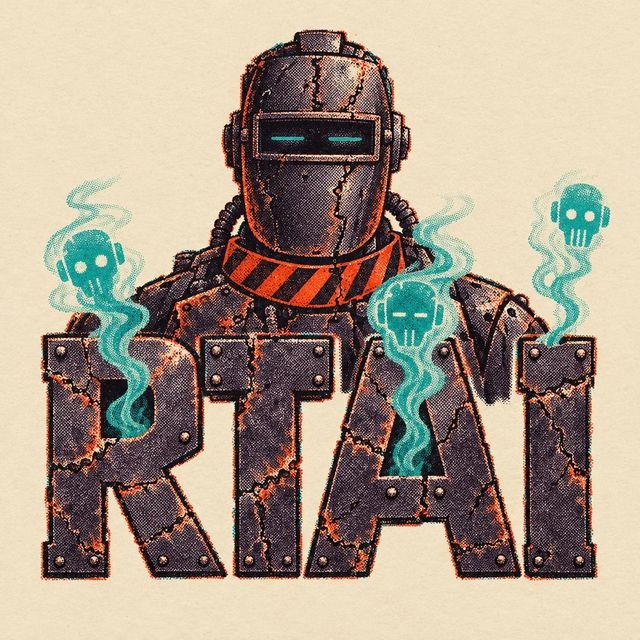
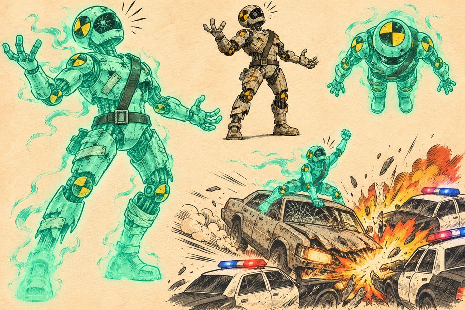
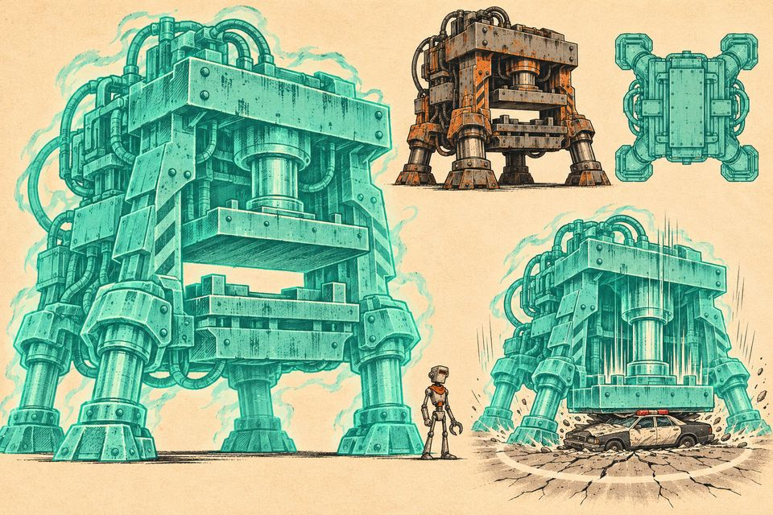
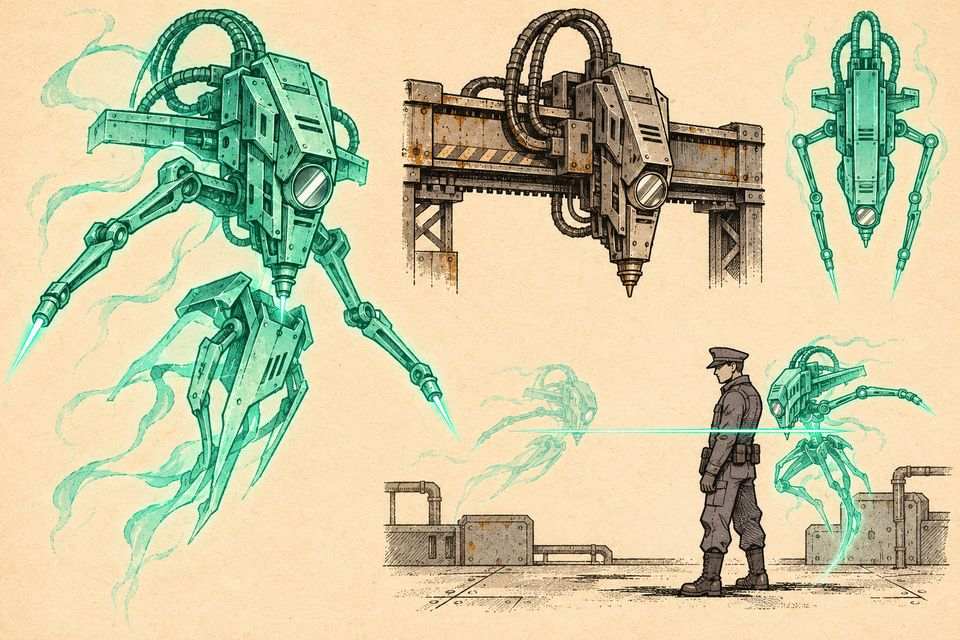
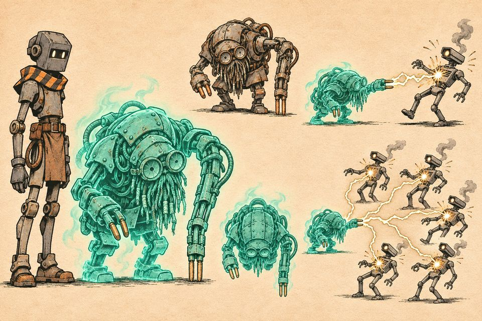

Three ways to open the story as a 60 to 90 second generated-video trailer. All three tell the same canon event: the "accident" on Line 9, the one survivor, the voices of the dead, and the police who come to finish the job. They differ in plot structure and in art style, from drawn animation to photoreal.
The trailer machine picks one variant, or makes all three. Each scene card has a full prompt for a video model: the variant's style prompt plus that shot.

Use these as image references for character consistency. The ghost sheets show each character alive (bare metal) and as a ghost (teal). The voice notes are proposals until the voice pass.
Tall, narrow factory spot-welder, stencil L9-04. Welder-mask visor with two thin teal slit eyes, a vermilion hazard-striped collar, scorched riveted plates, one torch forearm, one three-finger clamp, an employee badge on a lanyard, a tired slouch. Voice: dry, exhausted. Says "I" when lucid and "we" when the voices take over.

Battered crash-test robot: dented dummy body, black-and-yellow target discs, seatbelt harness, cracked visor. Spent its life being driven into walls and loves the impact. Voice: cheerful thrill-seeker.

A giant hydraulic stamping press on four piston legs, the press head as a heavy brow, die-plates as armour, about 3x Rivet's height. Voice: huge, slow, gentle, and fond of violence.

A laser-cutter gantry head freed from its rails: sleek, narrow, hovering, a mirror-lens eye, slim limbs ending in beam emitters, a duelist's silhouette. Voice: terse and precise.

The elder spot-welder: small, hunched, older than the factory, a welding-gun arm used as a cane, twin copper electrode fingers, a frayed cable beard, cracked goggles. Smaller than Rivet. Voice: a grumpy old teacher.